Reads like paper on a Kindle
A KOReader plugin fetches the paper when the Kindle wakes. The screen is e-ink and the device holds nothing else to open.
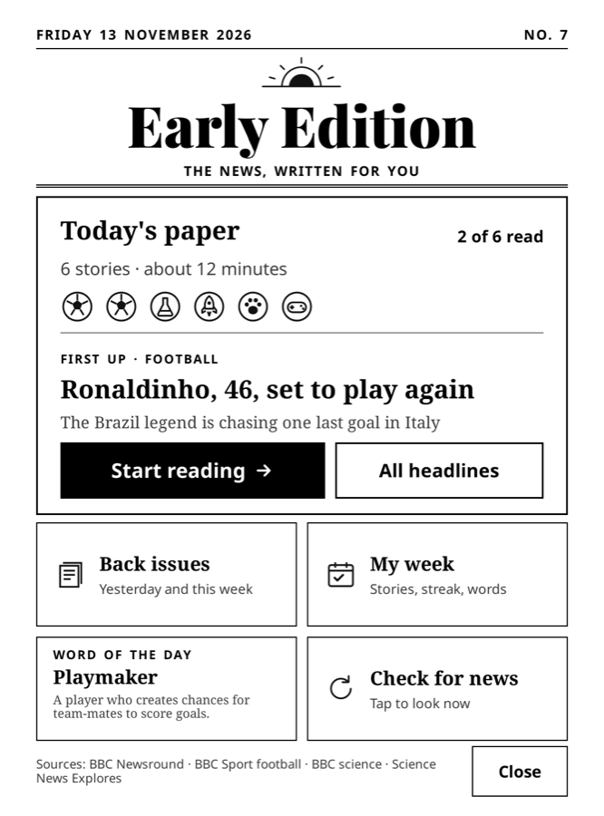
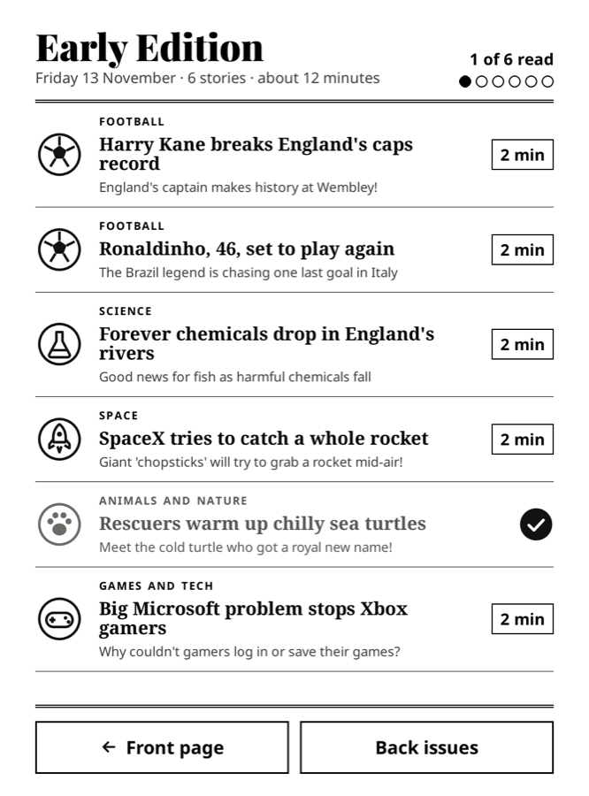
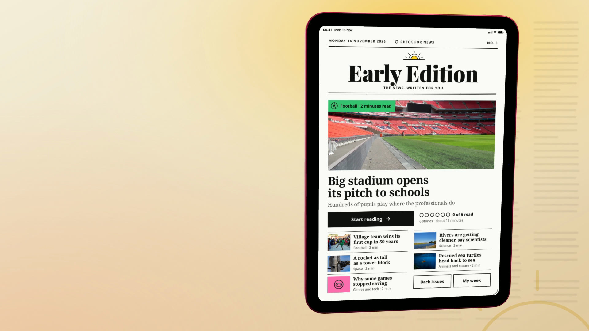
Every morning a small server at home picks six real news stories, rewrites each for your child’s reading age and has them waiting on a Kindle or an iPad.
Each story takes a minute or two and ends with a Word to know, a Think about it question and its source. The paper has no feed, no adverts and no links out.
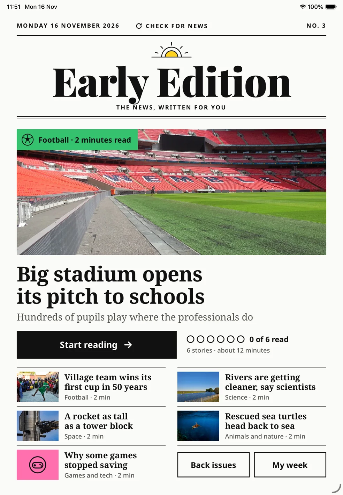
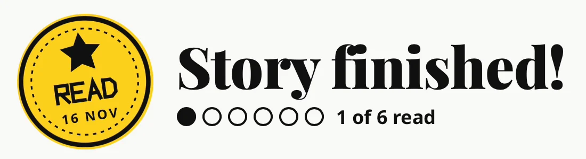
See which stories were read and for how long. Hide one before breakfast, add an article by pasting its link, and read what the checker found in each.
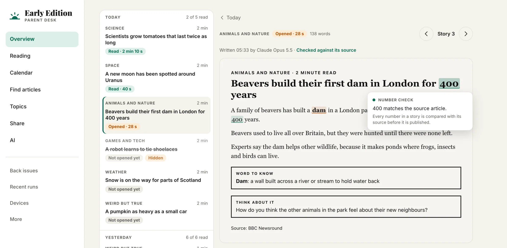
At 05:30 the server reads the news feeds you chose, picks about six stories and rewrites each one. A second AI call then checks every story against its source before the paper goes out.
Picks
Six stories and a reserve, weighted by topic.
Rewrites
To the length you set, with a Word to know.
Checks
Is it safe, and does the source support it?
Delivers
To the Kindle, the iPad and your dashboard.
A KOReader plugin fetches the paper when the Kindle wakes. The screen is e-ink and the device holds nothing else to open.


A home-screen web app with the stories’ photographs and colour. It opens full screen from its own icon.
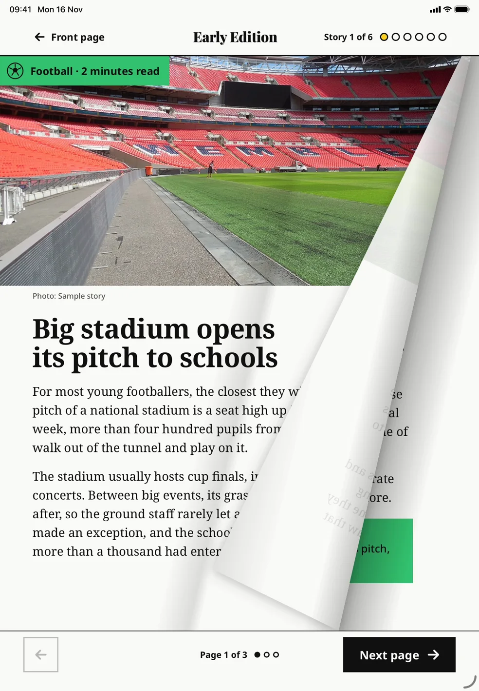
That line sits under the masthead of every paper. Real stories from real sources, rewritten and checked for one reader, on a device with nothing else to pull them away.
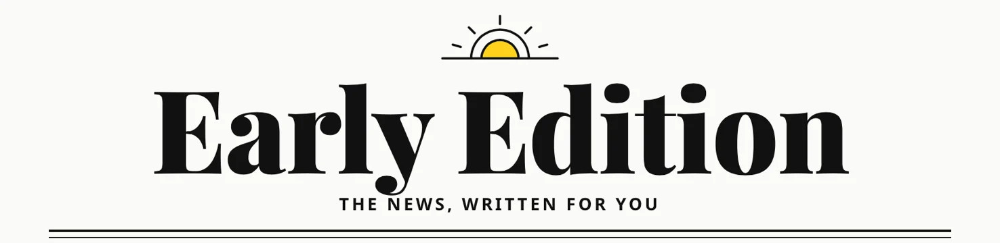
Set the age, the story length and a favourite team, then pin or block topics. Each child in the house gets their own paper and dashboard.
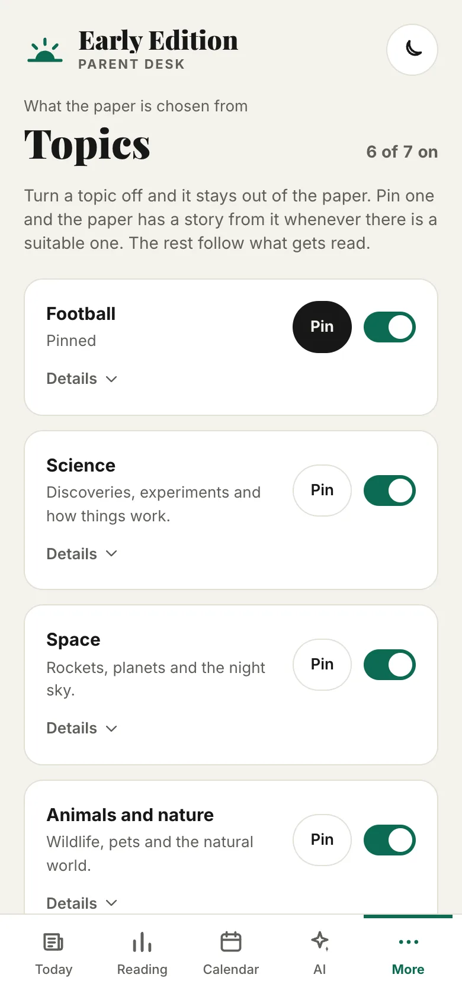
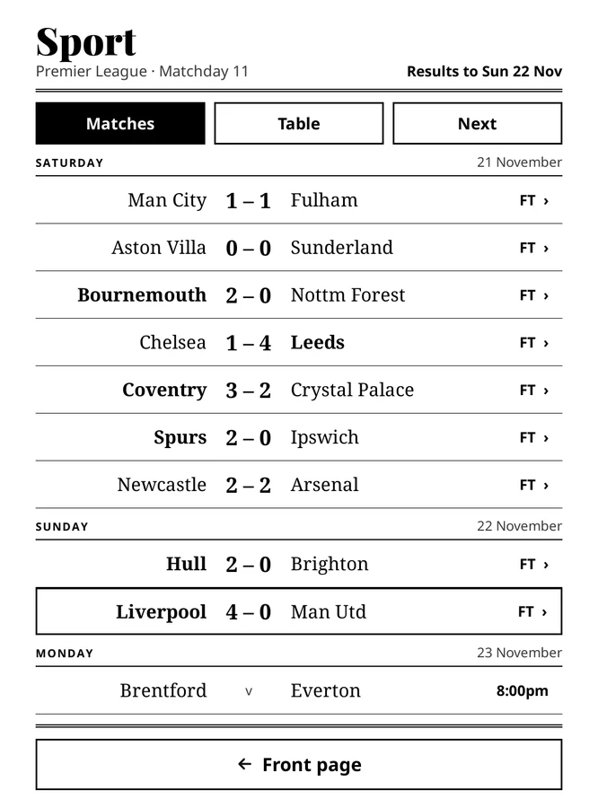
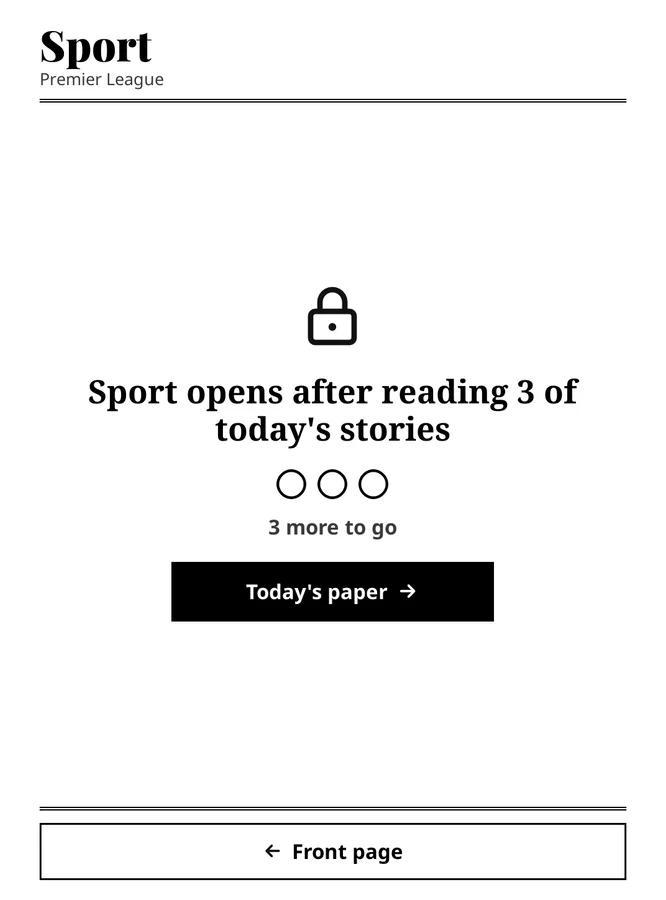
A Sport page with the Premier League table, the latest results and the next fixtures. It opens when half of today’s stories have been read properly, so the football comes after the news, not instead of it.
You need three things before you give it an evening.
The software is free under the MIT licence. With Claude Opus writing and checking, a paper costs about $0.35, so about $10 a month. Cheaper models can be chosen on the dashboard.
KOReader only runs plugins while it is open, so the Kindle fetches the paper when it wakes there. Left on the stock Kindle screen overnight, it fetches nothing.
It stays on your server, in one Docker volume. The AI model you choose is sent the news articles and the paper’s settings, such as the age and the topics.
It suits a UK reader best. The paper runs on London time and the built-in feeds are British; you can change the feeds in the config file.
No. Sport opens once half of today’s stories have been read to the end, each for at least half the time it should take. You can change how much, or turn Sport off, for each child on the dashboard.
Your server fetches them once a day with the paper, from free public feeds, so there are no live scores and nothing on the Kindle or iPad talks to anyone else. Scores never appear on the front page, so nothing gives away a result before the highlights.
It runs every morning for one family, and most of the code was written with AI under one person’s direction. Read the code before you rely on it.
One Docker command on a computer that stays on: a home server, a NAS or a Raspberry Pi 4 or 5.
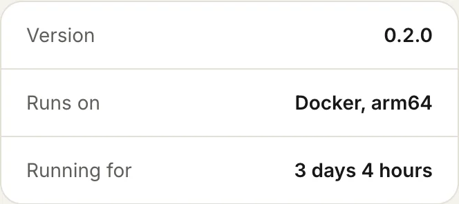
Copy the plugin into KOReader, or scan the dashboard’s QR code with the iPad’s camera.
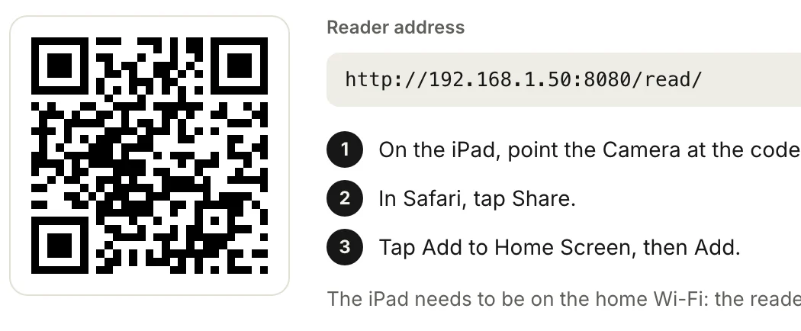
Pick the age, the topics and the AI model that writes. The first paper is made straight away.
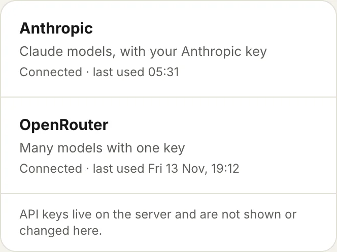